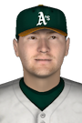

|
|
|  |
Grossman Tags Rainiers for 5 Hits Saturday, July 11th, 2020 It was a big day for Robbie Grossman and he brought the Las Vegas Aviators along for the ride. Grossman led his club to a 6-3 victory over the Tacoma Rainiers today at Cheney Stadium, smoking Tacoma pitching for 5 hits in 5 at-bats. The 30-year-old left fielder later called the victory "sweet." Robbie Grossman doubled in the 1st, hit a two-run single in the 3rd, singled in the 5th, singled in the 7th and singled in the 9th. Grossman is hitting .500 this year with no home runs, 6 RBIs and 12 runs scored. He has 29 hits in 58 at-bats, 12 walks and a .586 on-base percentage. Grossman has played in 15 games. |


|